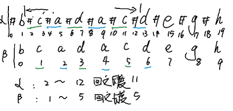
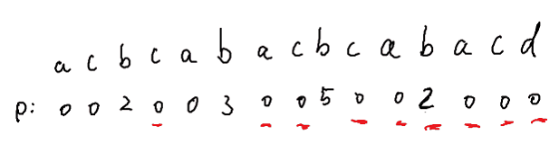
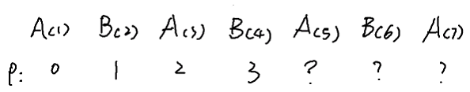
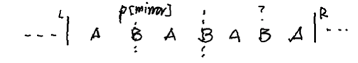
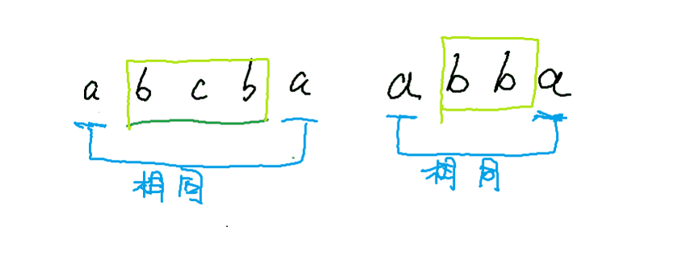

Longest Palindromic Substring
Manacher算法
最自然的解法就是以一个字符为中点依次左右展开对比，但是这样的做法面临奇数偶数的问题。也就是回文串存在以下的两种形式,在这种情况下面临着使用两套算法来判断的向题,极大的增加了解答问题的难度那么此处使用一种更灵巧的方法.在每个字符之间增加一个分割符#
需要将输入的字符串用特殊字符分割.但是分割的形式如何?#出现在新字符串的首尾吗?还是说仅仅起到字符串中间的分割功能?先讨论第一种情况,在这种情况下如何判断回文?从左向右逐个遍历在遍历过程中左右对比的方式寻找最长回文串。在这种处理方式中最重要的就是将带#的字符串映射回以前的字符串。
以字符串bcadacdegh为例,由图中的颜色区分可以得知.每一个井的下标除以2就可以得到其后的字符在源串中的位置,所以可以得到公式

有了以上的基础之后,便有了Manacher's算法,上一个算法最没有效率的地方就是没有选择的在每一个点进行了展开。如下图所示其中对红色标注的点并没有太多展开的必要,那么我们是否有办法可以跳过这些点的展开呢?是的Manacher算法通过Mirroring中的镜像特征可以预知中心点之后的点的p数组的值情况,从而可以跳过一些不可能的中心点。

该算法的第一步自然还是用#来分割字符串以排除字符串的奇偶问题,这个算法的另外一个重要特性就是Mirroring。
我们可以定义一个非常重要的整形数组p用来存放以每个字符为中心的回文串的长度,这个数组的重要性在于它可以帮助我们跳过一些不必要的点,而直奔最有可能成为最长回文串的下一个中心点。
我们注意第一个b对应的值在p中是3如果从b这个点向左向右展开的话(所谓的展开就是指以b为中心出发向左向右去寻找回文串)可以得到回文串#a#b#a#,如果仔细观察我们会发现b左边和右边的字符串相互之间互成镜像关系,这就给了我们一些灵感,这就是这个算法所利用的重要原理。
之前的展开算法使用穷举式的对比方法其时间复杂度很明显是O(n2)的而Manacher算法可以将时间复杂度降低到O(n),而它的核心思想就是要减少对center点的展开,也就是想办法在遍历各点的过程中跳过一些点,避免将其做为center点展开,那么如何选择这些center点,呢?这些点必须是很有可能成为下一个最长回文串的点,如何判断有这样细潜力点呢?这个口诀便是"寻找这样的一个中心点,使以它为中心的回文串扩充到刚刚访问过的中心点的右边界“。举例如下
从中查找最长的回文子串,这里面的回文子串包含中心点1:0~2 aba ,中心点3:0~6 abaxaba, 中心点5:1~8 baxabaxab, 中心点7:5~9 baxab，那么现在按照新的算法进行推导,
1)前四个点同样的是按照前面的穷举算法进行推导到中心点3也就是x(3)的时候,我们已经访问了0~6的字符区间。
2)哪个点成为下一个中心点呢?是x(7)吗?如果这样做那么就失去了以b5为中心的回文串,那我们是否又应该直接查找a(4),b(5),a(6)呢,当然我们可以这样做,但这样就回到了穷举算法,说好的不一样呢?那到底谁是下一个中心点呢?
3)按照前面的口诀观察a(4)发现它并没有扩展到以x(3)为中心的回文串的右边界a(6),所以a(4)不可能成为下一个中心。原因是以a(4)为中心的回文串必然包含在以x(3)为中心的回文串之中。所以a(4)必然得不到比x(3)更长的回文串
4)那么b(5)又如何呢?以b(5)为中心的回文串的确可以的确可以扩展到以x(3)为中心的回文串的右边界a(6),所以b(5)很有潜力,可以做为下一个中心点的候选
5)那a(6)本身呢?同理a(6)也是x(3)的右边界所以a(6)本身也是下一个中心点的候选。
6)但是b(5)比a(6)更有可能成为下一个候选,因为子回文串扩充到至少是x(3)的右边界,那么就有很大可能继续扩充,突破右边界的a(6)(方面的字符串内容还没有访问,所以这句话很容易理解),所以b(5)就自然是下一个选择。
7)解释到这理就自然产生一个疑问,你是如何知道a(4),b(5),a(6)到底能不能扩展到x(3)为中心的回文串的右边界的?我们刚刚还说过不能分别去扩展a(4),b(5),a(6)的呀?
到这理就该讲解Manacher算法的核心理念Mirroring,因为在已知是回文串的时候,中心点两边的项是相互对应的,也就是说其p数组的值是相互对应的。有了这个特性我们就可以预先得知右边项的p数组值的一些特征,而这些特征可以很好的帮助我们为选取下一个中心点做出决策。为了说明这个问题我们重新看一个例子。
有以下的字符串以及其对应的p数组。

如果我们以B(4)为中心折叠的话,我们可以发现其实A(5),B(6),A(7)的p数组的值其实和左边的值是一样的,也就是说以中心点为轴左右两部分的p数组值也是对称的,这也是Mirroring 的一个理论基础,但这不是全部而只是一个开始。

上面的例子没有考虑左右两边的还可能有其它字符的情况,那现在我们来假设左右都可以扩展的情况。
1)若右边是可以括展的,所以在扩展计算以后可以知道右边p数组的值可能比其左边的相对项的p数组的值大。但其值可以确认至少与左边的相对项的值相等。实际是多少还需要展开后才能知道。
2)若左边是可以扩展的,扩展左边可以得到p数组的值,但对于右边的相对项而言,这个值是不真实的,右边项的值其实还是扩展到右边界的值。
由上面的左右扩展情况其实我们可以得到一个估算p数组值的规律

1)如果p[B-mirror]跨越了L边界那么p[B]的值就不能由p[B-mirror]的值来决定此时的公式应该是p[B] = R-B′s index
2)如果p[B-mirror]在L边界之内,那么p[B] = p[B-mirror]
由此我们得到选取下一个中心点的 4个原则(一选择三拒绝)
一个选择
1) palindrome expands till right edge & its mirror palindrome is prefix (prefix的意思,就是指p[mⅰrror]的值正好到L边界,没有超出L边界。
三放弃
1) Totally contained under current palindrome
2) Current palindrome expands till end of input
3) Current palindrome expands till right edge & its mirror expands beyond left edge (这一点特别的重要,仔细想想可以明白,不选择这点的原因就是R边界后面的点必然不能与前面的点形成回文,如果形成了那意味着其实R边界应该继续向右扩充,这与已知的事实冲突,典型的反证思路。
那么最后我们从头到尾用一个例子来说明该算法。前4项我们都需要进行无选择的展开,之后的逻辑按照下面推进。
class Solution { |
动态规划
动态规划就是将复杂的问题分解为更为简单的子问题的集合。将这些子问题的解存放在一个数据结构中,每个子问题只解决一次,不重复计算,存储它们的解多是采用数组,并没有使用太复杂的数据结构。
在本题中,我们采用一个二维数组,这个二维数组用行来代表子串的起始位置,用列来代表子串的结束位置而用具体的一个cell来代表这个行起列止的子串是否是回文串。行和列的大小都是整个输入字符串的长度。所以如果字符串[i,j]是回文串的话cell(i,j)==true,否则cell(i,j)==false。
有了这个数据结构的帮助之后,就可以讨论具体的解答步骤了。可以看出无论奇偶回文串都可以按照一定的方式递归的进行判断。字符串首字母和字符串最后一个字母是否相等,如果相等,那么去掉字符串的首尾字符,取其中的子串按照同样的方法递归的进行判断。这是一种递归的方式是由大到小的一种处理方式,而动态规划则是逆向行驶,由一个一个字符开始,到两个字符,到三个字符,再到整个字符串,一个字符的判断结果为两个字符的判断提供信息,而两个字符的判断则为三个字符的判断提供信息,以此类推。中间所有结果或者信息都由二维数组保存。
